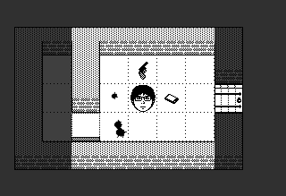

Gesuido



おはなし
内閣陰陽長官・安倍清史郎(6歳)はある晩夢を観た。突如出現した六体の巨人が、東京の街を焼き尽くす悪夢だ。その巨人の姿は、米巨大インターネット企業Georg(ゲオルク)が開発を進める人型ロボットそのものだった。その夢を予知夢と信じた安倍は、Georgのロボット研究の阻止を目論み、念力であらゆる時空から刺客を呼び寄せた。刺客たちは東京の地下にあるGeorgの研究所へと送り込まれた。
刺客たち
浪人

江戸時代の侍。討ち入り前に脱盟した元赤穂浪士の一人。刀と弓の扱いに慣れ、足腰も強く動きは素早い。
野蛮人

アトランティス大陸の戦士。強靭な肉体を持ち、剣や斧での戦いに長けている。古代の魔術の知識もあり、最初からいくつかの魔法の水薬を識別できる。
プログラマー
現代日本のIT企業社員。運動不足でサバイバル能力は低いが、PHPやRubyの基本的な文法を理解している。
※今後もっと増えます。
地下世界
Georgの研究所はだいたいJR新橋駅のあたりの地下奥深くにあります。そこへ到達するまでに、いくつかの階層を乗り越え無くてはなりません。
- 1. 下水道
- 明治期に作られた、多層構造を成す下水道網。1960年代に打ち棄てられたのち、長らく秘密裏に産業廃棄物や実験動物の廃棄先とされてきた。
- 2. 動物園
- 上野動物園の開園とともに風水バランスを考慮して地下に作られた「下野動物園(したのどうぶつえん)」。
- 3. 暴力団事務所
- 日本随一の信者数を誇る仏教系新興宗教を資金源とする暴力団池田組は、産業スパイや人体実験被験者の確保でGeorgに貢献している。この事務所も階下のロボット研究所防衛のために地下に作られ、拳銃や小銃で武装した構成員たちが侵入者に目を光らせている。
- 4. 研究所
- その目的は明らかにされていないが、六種類の人型ロボットがここで作られている。
掲載メディア
- 【東京インディーフェス】インディーズゲームの祭典「TIF」をレポート！ ドット絵ゲームやハイセンスなゲームがたくさん！｜連載｜TAPPLI
- 2人称視点ACTに不思議系ローグライクも！「東京インディーフェス 2015」で新感覚ゲームを体験 | Game*Spark - 国内・海外ゲーム情報サイト
- ローグライク系おすすめのフリーゲーム・インディゲーム作品８選 | もぐらゲームス
- 32×32ドットの青春。高校時代に作ったローグライクを世に問う『Gesuido』 - デジゲー博レポ
- インディーゲームメーカーの決起集会!? つぎなるブームの火種が灯る夜 [ファミ通app]
- インディーゲームの祭典『BitSummit 2014』一般デーブース総ざらいレポート：Eブロック ｜ ガジェット通信
- インディーゲームの種火: BitSummit番外編 グッズ＆変なもの紹介
- BitSummit 2014 レポート 「冬の終わり」 | ASTRAL GATE
- [BS14] BitSummit 2014 作品ピックアップ by Calma 『Gesuido』＆『Block Legend』 | AUTOMATON